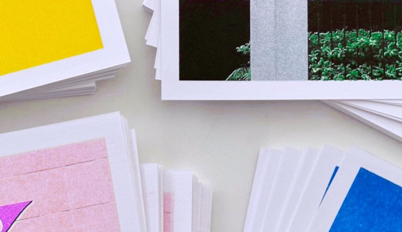
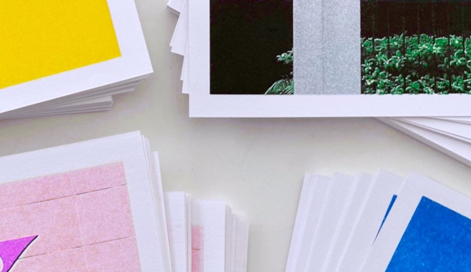

Готовы ответить на вопросы
Мы ничего не нашли
Задайте вопрос в Telegram
По вашему запросу нашли
1. Основы личного бренда
2. Введение в зины
3. Создание зинов для бренда
4. Продвижение зинов
5. Монетизация зинов
1.1 Что такое зин и зачем
он нужен бизнесу
1.2 Основы личного бренда
1.3 Как зины помогают
выразить личный бренд
Одностраничный зин
Многостраничный зин
Создание зина
Печать и склейка
Продвижение
Монетизация
Тетрадь-зин
Вернуться назад
Учебник • Продвижение зинов • Стратегии продвижения
Продвижение зинов
4.1 Стратегии продвижения

2 минуты на изучение
Основные способы распространения зинов:социальные сети, видео, подкасты, рассылки, фестивали, выставки и воркшопы
 
Зины можно продвигать через разные онлайн и оффлайн-каналы, часто комбинирование этих подходов даёт наилучшие результаты. Среди цифровых каналов продвижения чаще всего используются:
1. Социальные сети
Идеально подходят для визуального контента — там можно показать уникальные страницы зина и процесс его создания
2. Видео
Видеоконтент, например обзоры зинов или демонстрация страниц, помогает вовлечь аудиторию и усилить интерес
3. Подкасты
Подкасты дают возможность рассказать истории, стоящие за созданием зинов, и обсудить идеи с экспертами
4. Почтовые рассылки
Инструмент онлайн-продвижения, через который можно поддерживать интерес читателей к новым выпускам и рассказывать об их уникальных чертах
Используя различные платформы, можно адаптировать контент под их особенности: в соцсетях показывать уникальный дизайн и процесс его создания, с помощью видео вовлекать зрителей историями, а рассылками и подкастами поддерживать связь с аудиторией.
Проработка SMM-стратегии и создание контент-плана — ключевые шаги в продвижении зинов на онлайн-площадках. Стратегия помогает определить целевую аудиторию, выбрать подходящие платформы и выстроить системный подход к взаимодействию с подписчиками. Контент-план упрощает регулярное обновление страниц, позволяет заранее распределить усилия на создание визуального и текстового контента и удерживать интерес аудитории. Такой структурированный подход обеспечивает последовательность, экономит время и усиливает влияние зинов в цифровой среде.

Офлайн-маркетинг помогает выйти за рамки интернета и взаимодействовать с аудиторией напрямую. Например, участие в фестивалях, выставках и воркшопах, посвященных печатной продукции, позволяет продемонстрировать свои зины новой аудитории и завести полезные связи. Продажа зинов в книжных магазинах и на специализированных ярмарках также привлекает интерес тех, кто ценит независимые проекты и уникальные издания. Такие мероприятия создают пространство для живого общения, которое помогает укрепить эмоциональную связь с будущими читателями. Благодаря комбинации разнообразных каналов продвижения вы можете не только охватить разные аудитории, но и сделать свои зины доступнее и заметнее.